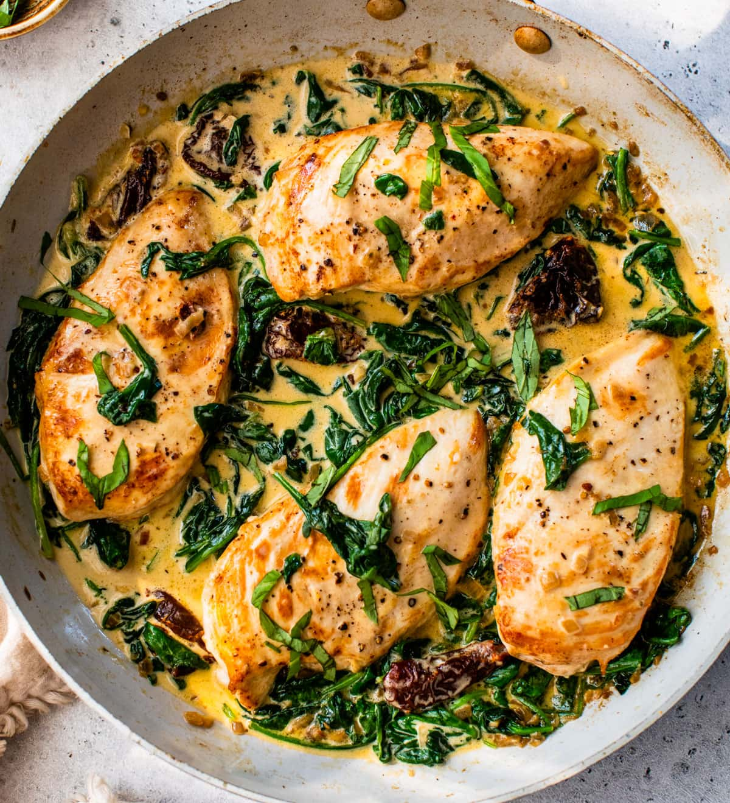

Fabulous Tuscan chicken!

Win over dinner guests with this simple Tuscan chicken recipe!
This is what you will need ↓
- 4 boneless chicken breasts
- 1 teaspoon italian seasoning or mix of those: oregano, thyme, basil and rosemary
- 1 teaspoon salt & ground pepper
- virgin olive oil or any other oil
- 4 garlic cloves
- 1/4 finely chopped onion
- 60g dry tomatoes
- 60g spinach
- 300g heavy cream
- 30g grated parmesan
Follow the recipe ↓
- Prep the chicken. Season both sides of each chicken breast in Italian seasoning, salt, and pepper.
- Sear the chicken. Heat 2 tablespoons of the oil in a large skillet over medium heat. Add the chicken and sear for 3 to 4 minutes on each side, until golden. Remove the chicken from the pan to a plate and set aside.
- Cook the onions. In the same skillet, add another tablespoon of oil and the onion. Saute for 2 to 3 minutes, until the onion has softened.
- Add the sun-dried tomatoes and garlic and saute another minute, until fragrant.
- Add the spinach, and saute another minute, until just starting to wilt.
- Add the heavy cream and parmesan cheese, stir together, and bring to a simmer.
- Let it simmer. Place the chicken back in the skillet and cook until heated through, about 5 minutes.
You are done! Bon appetit!
Go back to recipes